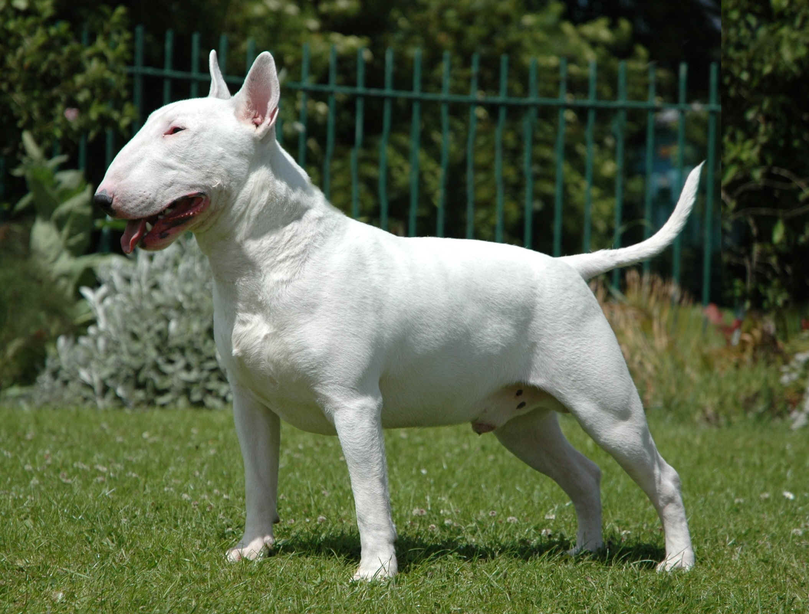

Бультерьер
- Продолжительность жизни: 10-14 лет
- Группа: Терьер
- Окрас шерсти: Белый или любой цвет с вкраплениями белого. Основной цвет может быть различным
- Длина шерсти: короткая.
- Линька: умеренная.
- Рост : около 56 см
Бультерьер - сильная, атлетически сложенная и очень энергичная порода. Она легко выполняет множество различных команд.
Она является хорошим телохранителем. Она крайне враждебно ведет себя по отношению к другим собакам.
Бультерьер – идеальный выбор для семей, проживающих в сельской местности.
Правильно обученная собака может быть весьма общительной и преданной.
У Бультерьера весьма своеобразная форма головы: по сравнению с другими породами она кажется неправильной.
Если посмотреть на нее в профиль, можно увидеть, что голова овальная от макушки и до кончика носа.
Глаза у бультерьера очень маленькие, миндалевидные, глубоко посажены.
Для некоторых бультерьеров характерны глаза треугольной формы. Они должны располагаться ближе к ушам, нежели к носу.
Уши у собаки тонкие маленькие и близко поставлены на самой макушке. Уши всегда должны быть направлены вверх.
Бультерьер – жизнерадостная, любящая находиться в окружении людей собака. Смотря на то,
как она внимательно и сосредоточенно слушает своего хозяина, может показаться, что собака понимает всё, о чем ей говорят.
Она на самом деле очень умная. Многие думают, что эта бультерьер – веселая и забавная порода,
даже несмотря на ее агрессивное поведение.
Уделяйте бультерьеру много времени и внимания, тогда он будет чувствовать себя счастливым.
Они игривые и энергичные, что позволяет им быть хорошими друзьями для детей всех возрастов.
